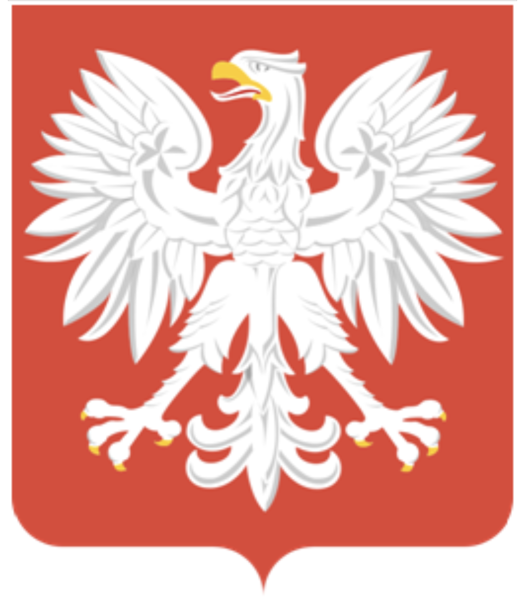

.svg){kind=link}
Po drugiej wojnie światowej Polska stała się państwem zależnym od Związku Socjalistycznych Republik Radzieckich. Polskę z lat 1944-1989, gdy władzę w kraju sprawowały partie komunistyczne, nazywa się potocznie Polską Ludową. Polska Rzeczpospolita Ludowa(PRL) to oficjalna nazwa państwa polskiego obowiązująca wlatach 1952-1989.Nazwa została wprowadzona na mocy konstytucji z lipca 1952 roku. Dokument zniósł urząd prezydenta, a także zmienił godło Polski – OrzełBiałyzostał pozbawiony korony.

После Второй мировой войны Польша стала зависимым государством Союза Советских Социалистических Республик. Польшу с 1944 по 1989 год, когда страной правили коммунистические партии, обычно называют Народной Польшей. Польская Народная Республика (ПРЛ) — официальное название польского государства, действовавшего в 1952–1989 годах. Название было введено в соответствии с конституцией от июля 1952 года. Документ упразднял должность президента, а также менял польский герб – Белый орел был лишен короны.
{kind=link}
Święto Narodowe Trzeciego Maja jest dla Polaków jednym z ważniejszych świąt państwowych. Zostało ustanowione w 1919 roku, na pamiątkę uchwalenia Konstytucji 3 Maja, czyli pierwszej konstytucji w Polsce i Europie. Dzień 3 maja jest w Polsce dniem wolnym od pracy
Национальный день Третьего мая – один из самых важных государственных праздников для поляков. Он был создан в 1919 году в память о принятии Конституции 3 мая, первой конституции в Польше и Европе. 3 мая в Польше выходной на работе.
{kind=link}
Święto Sił Zbrojnych Rzeczypospolitej Polskiej potocznie nazywane jest Świętem Wojska Polskiego i jest ono obchodzone 15 sierpnia na pamiątkę zwycięskiej bitwy warszawskiej z 1920 roku, stoczonej podczas wojny polsko-bolszewickiej. Corocznie 15 sierpnia w kościołach odbywają się nabożeństwa za poległych na polu walki, natomiast w Warszawie przed Grobem Nieznanego Żołnierza odprawiana jest Honorowa Zmiana Warty, w której uczestniczą najwyższe władze państwowe. Ponadto tego dnia organizowana jest defilada wojsk. Dla Polaków ten dzień również jest dniem wolnym od pracy.
День Вооруженных Сил Республики Польша в просторечии называется Днем Войска Польского и отмечается 15 августа в память победоносной Варшавской битвы 1920 года, произошедшей во время Советско-польской войны. Ежегодно 15 августа в храмах совершаются службы по погибшим на поле боя, а в Варшаве перед Могилой Неизвестного солдата отмечается почетная смена караула, в которой принимают участие высшие государственные чиновники. Кроме того, в этот день организуется армейский парад. Для поляков этот день также является выходным на работе.